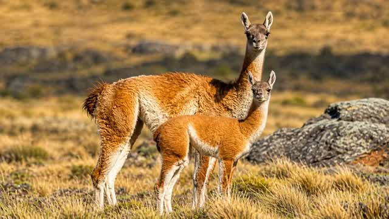
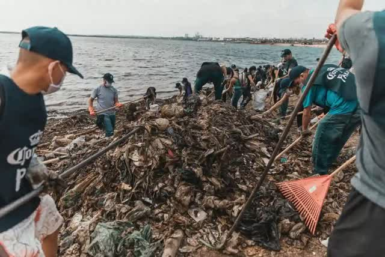

Este es un resumen simple de lo que esta pasando con el ambiente en Paraguay este año.
Tiene mas de seiscientas mil hectareas. Ahi hay dunas de arena y bosques secos. Abajo de la tierra esta el acuifero Yrenda que es la reserva de agua dulce mas importante de toda esa zona seca. Tambien viven ahi los ULTIMOS guanacos de Paraguay.
El guanaco es un pariente cercano del camello y de la llama 🐪. Puedes leer mas sobre el en Wikipedia ↗️

El Diputado Jose Rodriguez presento un proyecto de ley para permitir que empresas EXTRANJERAS busquen y saquen petroleo gas y minerales adentro de ese parque. El Ministerio del Ambiente ya habia dicho que no la pirmera vez que lo presento hace años. La Corte Suprema tambien en 2019. Y 2023 el Senado tambien lo rechazo. Aun asi el proyecto volvio este año copiado y pegado con casi ningun cambio… (caraduras)
Las empresas que quieren entrar son varias. Una es Primo Cano Martinez SA una empresa paraguaya familiar que tiene un juicio contra el Estado por sesenta millones de dolares. Otra es Riviera SA de capital frances y ruso. El argumento a favor es que Paraguay necesita el dinero y la energia. El argumento en contra es que se arriesga el agua la fauna y los pueblos indigenas por un beneficio que ni siquiera esta confirmado todavia.
ABC Color sobre el rechazo del Mades
ABC Color sobre la audiencia publica
Diario Hoy sobre el estado actual del proyecto
Ultima Hora explicando que es el parque
Desde el año 2000 hasta 2026 se han perdido millones de hectáreas de bosque. Los departamentos de Boquerón y Alto Paraguay registran una de las mayores tasas de deforestación DEL MUNDO
Una empresa llamada “Chaco Minerals” solicito buscar litio en casi dos millones de hectareas del Chaco. Eso es varias veces mas grande que todo el parque Medanos junto.
Un grupo de periodistas investigo esa empresa y encontro casos de Corrupcion. La empresa dice que esta registrada en 🍁Canada pero no aparece en ningun registro de ese pais. Uno de sus dueños sigue firmando papeles legales en Paraguay aunque los diarios de Ecuador dijeron que ese hombre murio en el año 2024. Y la persona que ahora maneja los recursos de la empresa es la misma funcionaria que era la encargada del Estado de aprobar esos mismos permisos.
En 2023 el Congreso cambio una ley y borro la regla que obligaba a esperar un año antes de que un funcionario publico pase a trabajar para la empresa que el mismo controlaba. El presidente Peña firmo ese cambio en enero del 2024.
Ahora basicamente pueden renunciar un viernes y el lunes ya estar trabajando para la misma empresa que esa semana estaban regulando. Antes la ley les prohibia tres cosas por un año completo despues de dejar el cargo: trabajar o asesorar a las empresas que controlaban, hacer tramites para esas empresas ante el mismo organismo del que se fueron, y ser accionistas de esas empresas. Las tres cosas juntas. Ese articulo entero fue borrado. Cero espera. Cero enfriamiento. Y eso es exactamente lo que le paso a la funcionaria de este caso, se fue de controlar la mineria del Estado y a los pocos meses ya estaba adentro de la empresa minera cobrando sueldo.
ANR corrupta como siempre. Chupan de la plata del estado para sus empresas PRIVADAS.
Ademas uno de los pedidos de esta empresa se superpone justo con la tierra de los Ayoreo Totobiegosode. Ese es el ultimo pueblo indigena de toda Sudamerica fuera del Amazonas que vive completamente aislado sin contacto con nadie.
Fuentes
Mongabay la investigacion completa sobre la empresa
Consenso el seguimiento despues de la investigacion
El nueve de agosto del 2026 el canciller paraguayo viajo a Washington y firmo un acuerdo nuclear con el secretario de estado de Estados Unidos Marco Rubio ↗️. El objetivo declarado es buscar uranio en Paraguay. El acuerdo tambien deja la puerta abierta para instalar reactores nucleares pequeños en el futuro.
Esto paso apenas unos dias antes de que el gobierno saliera a hablar otra vez sobre Medanos. Y lo mas importante es que este tipo de acuerdo no necesita pasar por el Congreso. No hay audiencia publica. No hay votacion. Se firma y ya esta.
Ademas en febrero del 2026 Paraguay ya habia firmado otro acuerdo parecido con Estados Unidos sobre minerales criticos como litio uranio y tierras raras. Ese acuerdo busca frenar la influencia de China y tambien de Europa en esos minerales. Tampoco paso por el Congreso.
Fuentes
ABC Color sobre el pacto nuclear
ABC Color sobre el acuerdo de minerales criticos
La Politica Online sobre el contexto geopolitico
Una empresa de Estados Unidos llamada Uranium Energy Corp planea invertir entre quinientos millones y mil millones de dolares para sacar titanio y hierro en Alto Parana y Canindeyu. Es el proyecto minero mas grande de todos los que estan avanzando en Paraguay ahora mismo. Recien empezaria a funcionar en el año 2029.
Compara ese numero con los sesenta millones de dolares que reclama la empresa de Medanos y vas a entender cual es el proyecto que en realidad mueve mas plata. Y sin embargo es el que menos aparece en las noticias todos los dias.
Fuentes
La Politica Online sobre el mapa minero de Paraguay
Este no es un proyecto nuevo. Es un problema viejo que sigue sin solucion. En Paso Yobai unas cinco mil personas sacan oro de forma artesanal usando mercurio y cianuro. Esos quimicos son veneno para el cuerpo humano y contaminan el agua que toma la gente todos los dias. En agosto del 2025 una senadora presento un proyecto para prohibir el cianuro en toda la mineria del pais. El Senado lo rechazo.
Fuentes
Por que Afecta nuestra salud, acaba con animales nativos del Paraguay etc. Podes pasar a leer mas aca Fauna ya Extinta ↗️
Yo creo que Medanos del Chaco funciona como cortina de humo. No necesariamente porque alguien lo planeo asi a proposito sino porque el sistema mismo termina funcionando de esa forma.
Medanos genera pelea publica. Hay audiencias. Hay organizaciones que protestan todos los dias. Hay periodistas que escriben sobre el tema todo el tiempo. Eso ocupa toda la atencion disponible de la gente. Ya se prohibio varias veces, el politico lo vuelve a proponer una y otra vez, esto se llama desgaste, y llega un momento en donde se lo aprueban.
Basicamente es como tu hermanito llorando sin parar para que le compres algo o un desconocido en una red social publicando a cada rato que se suscriban a su onlyfans…
Mientras tanto el litio avanza con una empresa fantasma y un escandalo de corrupcion ya documentado que casi nadie leyo. El uranio se negocia con Estados Unidos sin pasar por el Congreso. Y el titanio mueve mil millones de dolares sin que casi nadie sepa siquiera que ese proyecto existe.
El acuerdo con Estados Unidos poco transparente y el que peor huele en todo el proceso. Medanos es importante si. Pero es el arbol que no deja ver el bosque completo.
No dejemos de mirar el Bosque por que hoy nos tapa un Arbol, quieren acabar con la naturaleza por todos lados.
Incluso si lo de Medanos del Chaco no se aprueba esto dara una falsa sensacion de haber hecho algo bueno e ignorar lo que viene despues. Es un comportamiento humano que es abusado por gobiernos y empresas de marketing, podes leer mas aca Wiki EN ↗️
Analogia: Cometa = Daño Ambiental
Ayudanos a cuidar el Ambiente, Juntos es Posible.
Unete a la Comunidad en WhatsApp
Hay grupos de Limpieza, se avisa cada vez que habra una actividad o tambien podes ver desde Aqui, Directo en la Web sin instalar Nada. Incluso podes Activar Notificaciones. ➡️

Ademas en un futuro, Si somos muchos podemos manifestarnos para presionar la aprobacion de leyes de proteccion ambiental.
Para hacer denuncias Ambientales Presiona Aqui ↗️
Tambien podes ver las noticias del MADES aca abajo: